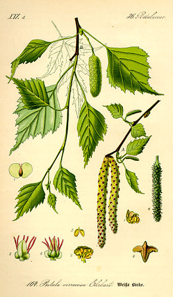
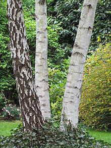
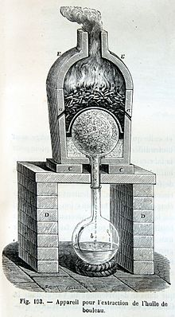
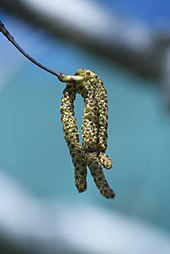

Étymologie :
Le terme bouleau procède de l'ancien pluriel du mot boulel (jadis un boulel, des bouleaux). L'ancien français boulel est le diminutif de l'ancien français boul, bououl 7 (cf. un boulay ou une boulaie, « bois, forêt où le bouleau domine »). Le terme boul est issu du latin vulgaire betullus (< latin classique betulla) d'origine probablement celtique (gaulois), sur la base de *betuo-, thématisation de *betu-, dont est issu le nom brittonique du même arbre : breton bezv, gallois bedw et vieil irlandais beithe « bouleau »8. *betu-/betto pourrait désigner à l'origine en celtique, la poix (goudron de bouleau) obtenue en chauffant de jeunes arbres pleins de sève et équivalent du latin bitumen9. Le catalan et l'occitan ont beç/bès « bouleau », le gascon a bedoth, bedora, l'espagnol abedul « bouleau ». La toponymie et l'anthroponymie du sud de la France compte de nombreux Besse, Bessières (« plantation de bouleaux »), Bèze, voire Besant, qui signifient tous « bois de bouleaux, boulaie »8.
|  |
|
 |

information :
Les bouleaux font partie de la famille des bétulacées et du genre Betula. La plupart des espèces sont des arbres ; quelques-unes, comme Betula nana, sont des chaméphytes. Les bouleaux poussent en général sur les terres pauvres et souvent siliceuses, jusqu'à 2 000 m d'altitude, ainsi que dans les régions arctiques. Les bouleaux sont des plantes pionnières qui constituent souvent la première formation arborée lors de la reconquête ou de la colonisation de landes par la forêt. Ils apprécient les sols plutôt acides et humides. Les bouleaux forment des futaies appelées boulaies ou boulinières ou encore des bétulaies. Il existe quatre espèces de bouleaux en Europe, dont deux arbres largement répandus : Betula pendula, le bouleau verruqueux, et Betula pubescens, le bouleau pubescent, et deux arbrisseaux des régions arctiques : Betula nana, le bouleau nain, et Betula humilis. De nombreuses autres espèces se rencontrent en Asie et en Amérique du Nord. En climat tempéré, les bouleaux vivent moins longtemps (30-40 ans), mais plus au nord (Suède, Finlande, Russie, etc.) ils peuvent vivre jusqu’à 100 ans et plus. Cet arbre caduc de la famille des betulaceae fleurit d'avril à mai. Le bouleau est très connu pour son écorce blanche, lisse et brillante, ses petites feuilles colorées de teintes vert clair au printemps et jaune à l’automne2. Sa couleur blanche est due à la bétuline (en), son principal constituant. Le port du branchage est souvent dressé et relativement aéré, filtrant la lumière en été sans la bloquer. Le bouleau est donc considéré comme un bel arbre d'ornement2 et ses caractéristiques lui permettent de s'adapter à tous les types de jardin. Ses inflorescences sont des chatons allongés de 10 cm de longueur, dressés puis pendants pour les mâles et de 3 cm dressés pour les femelles. Ses fruits sont des samares groupées en chatons. Cet arbre à l'écorce blanche écaillée peut atteindre 20 à 30 m de hauteur et jusqu'à 60 cm de diamètre à la base. Les racines des bouleaux sont peu profondes. On attribue à sa sève, ainsi qu'à son écorce, de nombreuses propriétés médicinales et autres 3,4,5,6.
Utilisation :Le brai ou goudron de bouleau était largement utilisé comme adhésif dès le Paléolithique moyen jusqu'au début du Mésolithique. Les Néandertaliens produisaient du brai par distillation sèche de l'écorce de bouleau il y a 200 000 ans. En Europe du Nord (Scandinavie, Pays baltes, Sibérie), Le rhytidome (écorce au sens strict) de bouleau, tressé en lanières, était utilisé à la campagne pour fabriquer des chaussures appelées lapti (лапти) en Russie. En Russie, il a également servi de support d'écriture. Le bouleau est également un arbre décoratif utilisé dans les parcs et jardins. Il est souvent planté par groupe de trois (cépée de bouleaux). Une cépée de trois bouleaux. Le bouleau brûle vite sans que sa flamme soit trop chaude et il laisse très peu de cendres. Apprécié des boulangers, c'était le bois de boulange. Des fagots étaient également utilisés pour faire chauffer l'huile de friture (pour par exemple frire les frites), le cuisinier atteignait ainsi rapidement une température suffisante. La vitesse de chauffe et de combustion lui permettait de gérer le rapport entre les temps morts entre les clients et la quantité de bois utilisé. L'écorce de bouleau est un amadou efficace et qui brûle bien, connu depuis le Néolithique. En Europe du Sud où leur croissance est rapide, le bois des bouleaux pubescents et verruqueux est considéré comme de peu de valeur. Dans les pays du Nord où il croît plus lentement, on en tire un bois de belle qualité, d'aspect très blanc, doux et soyeux, qui se travaille et s'imprègne facilement. Ses propriétés mécaniques sont excellentes, son grain est fin et uniforme. Le bois du bouleau jaune est utilisé en menuiserie (au Canada sous le nom de merisier et sous le nom de merisier rouge pour le bouleau flexible). En Amérique du Nord, de l'Est du Canada à l'Alaska, à partir de la sève brute du bouleau est produit de l'eau de bouleau, de la bière (Birch beer), du vin, de l'eau-de-vie, du vinaigre et du sirop de bouleau (un sirop édulcorant similaire au sirop d'érable). Ötzi, l'homme du Néolithique moyen mort 4 546 ± 15 ans av. J.-C., retrouvé sur un glacier entre l'Autriche et l'Italie en 1991, détenait des flèches dont la pointe de silex était solidement fixée notamment à l'aide de brai de bouleau. Auparavant, en 1960, des traces de fabrication datant de 43 800 ± 2 100 BP et 48 400 ± 3 700 BP ont été retrouvées en Allemagne à Königsaue près d'Aschersleben, Saxe-Anhalt, Allemagne, ce qui en fait la plus ancienne colle fabriquée par l'homme. Ce même bitume de bouleau sert à colmater les embarcations autant que jadis les coques des navires. Enfin, sur les sites mésolithiques (10 000 - 5 500 av. J.-C.) de Star Carr, Royaume-Uni ou encore néolithique (5 500 - 2 000 BC) d'Altscherbitz, Saxe, Allemagne, de la poix de bouleau a également été retrouvée, portant des traces de morsure de dent humaines, sans qu'il n'ait pu toutefois être déterminé à quelle fin (technique ou dentaire). L'huile de poix de bouleau est un répulsif très apprécié pour son efficacité dans les pays scandinaves qui, l'été, sont infestés de moustiques, comme celui de l'« essence de népéta », documenté en Iowa, aux États-Unis. En France, en 1896, le Journal des connaissances utiles indique dans un article du mois de mars que « les salières suspendues sous le manteau de nos cheminées de cuisine sont en bois de bouleau. Son écorce sert à tanner le cuir et à lui donner une belle couleur jaune... » parmi d'autres usages, son bois est utilisé dans la fabrication de balais, de verges, de sabots tandis que la sève, voire l'écorce, servent de matière première, par exemple au charron pour fabriquer une poix graisseuse mais stable appliquée sur les jantes des moyens de transport et de traction. |
  |